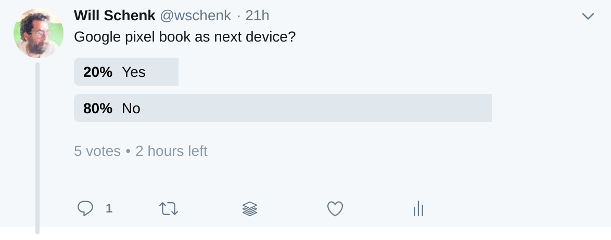
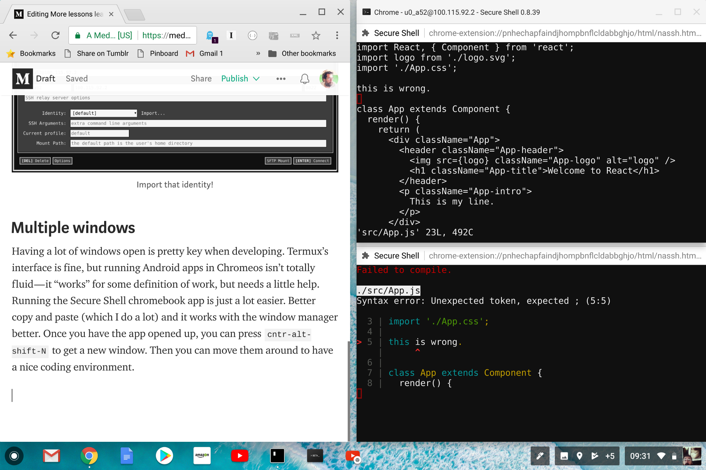

The Pixelbook just feels exciting in my lap, so much lighter and zippier than my MacBookPro. The one that I can’t quite bring myself to upgrade. Lets continue down the path of setting up this machine as a dev environment and see how well we can make it work.
First I should recognize my indebtedness to Kenneth White, who wrote up a great guide to setting up a secure Chromebook environment. I’m less security focused than he is, and he goes really deep so check it out.
A quick recap
- Download
termuxfrom the Google Playstore apt get updatepkg install termux-exec proot util-linux opensshtermux-setup-storagetermux-chrootmkdir -p /storage/emulated/0/Download/devbox/sshln -s /storage/emulated/0/Download/devbox /home/devbox8.ssh-keygen -t rsa -b 4096 -C “wschenk@gmail.com”(Replace with your email for good sanity.) 9.cat /home/devbox/ssh/id_rsa.pub >> /home/.ssh/authorized_keys(Use the newly created key to log in to the local termux box)sshd11.whoamito get your user name 12.ifconfig arc0 | awk '/inet /{print $2}'to get your up addressInstall the Chrome Secure Shell chrome book app
Open a new shell session. Enter in the username ip you found above. Set the port to
8022. Import the identity that you just created, the private key is inDownloads/devboxthat you generated above.

Multiple windows
Having a lot of windows open is pretty key when developing. Termux’s interface is fine, but running Android apps in Chromeos isn’t totally fluid — it “works” for some definition of work, but needs a little help. Running the Secure Shell chromebook app is just a lot easier. Better copy and paste (which I do a lot) and it works with the window manager better. Once you have the app opened up, you can press cntr-alt-shift-N to get a new window. Then you can move them around to have a nice coding environment.

One nice thing about this is that Secure Shell is that it copies on select, but cntr-shift-v pastes into it.
This machine is fast
I’ve been resisting upgrading my 2015-era Macbook Pro, so I’m comparing an older top-of-the-line machine with a newer top-of-the-line machine, but this thing is a screamer. The hardware is more exciting than the new Macbooks, and being able to flip this to be a tablet, or into a tent which I’m sure will be great watching videos on an air plane. (A specific use case I know but right now I split my time on planes working or catching up on YouTube, so this is just about perfect for that.)
It requires a facility with Linux to navigate around, so the learning curve is a little funky. I’m going to keep playing around with this for a few more weeks and give you a report on how it goes overall.